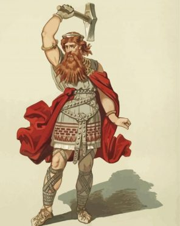
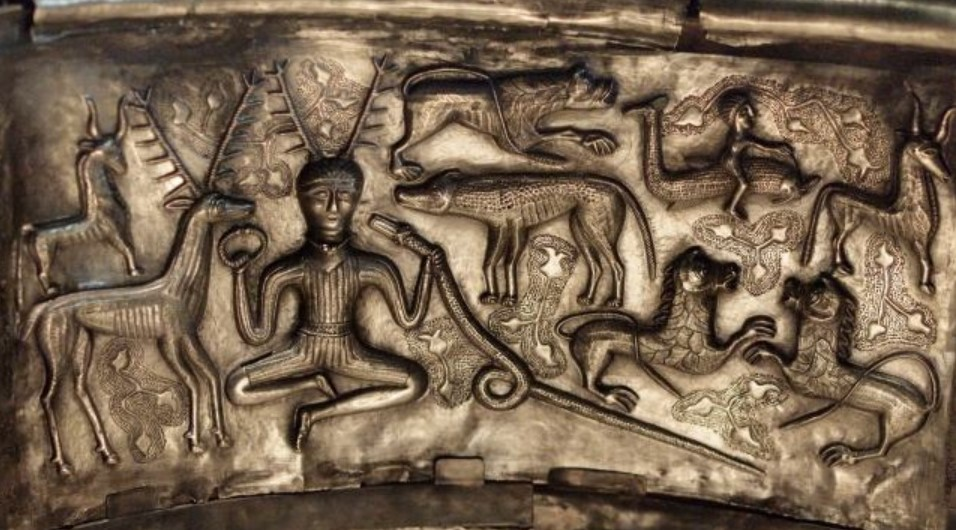
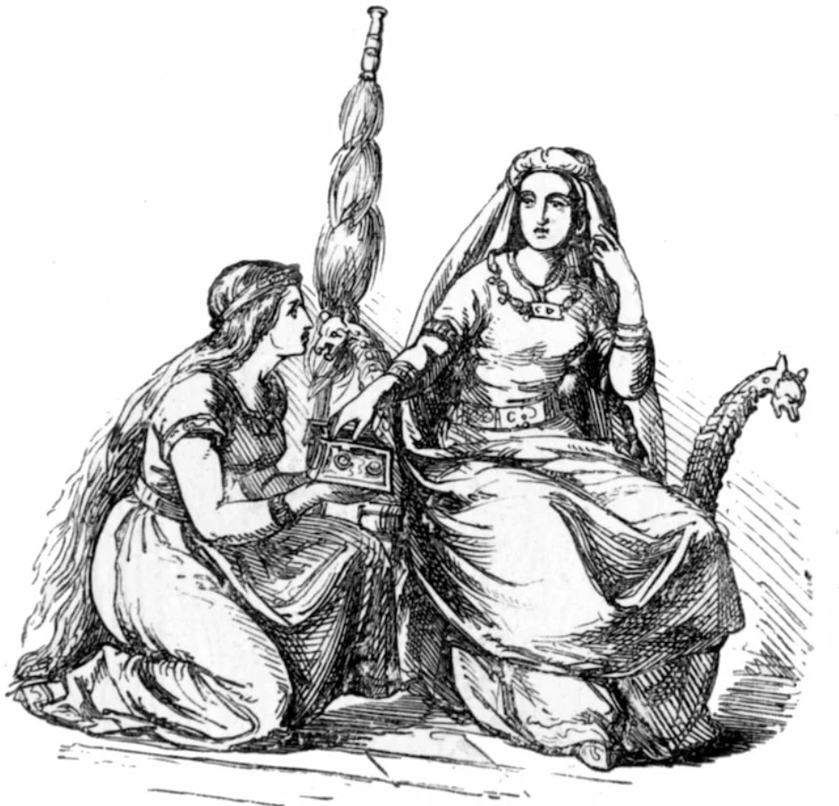
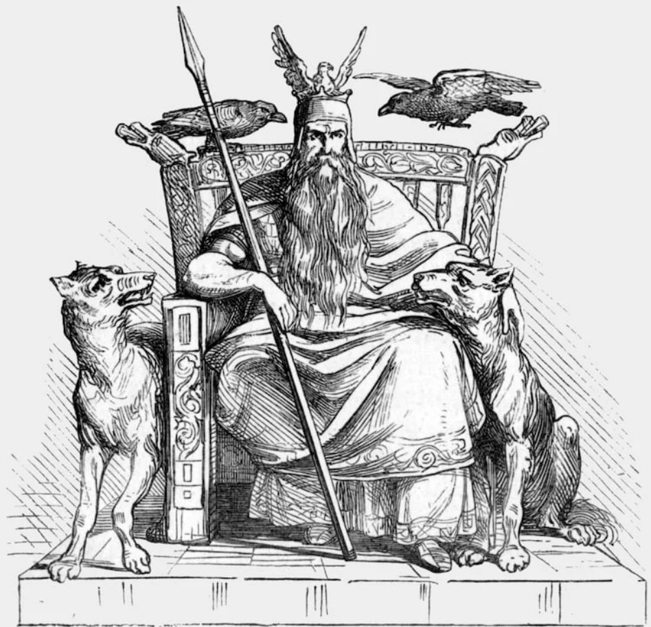
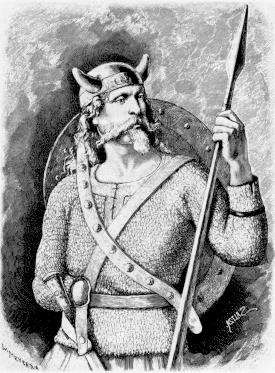
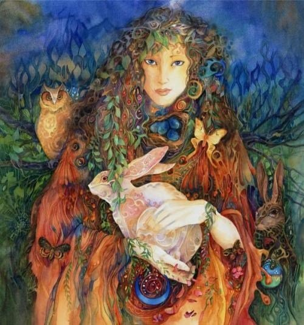

Anglo-Saxon Heathenry is a polytheistic religion, that is it has many Gods and Goddesses. The ancient Anglo-Saxon pagans shared many of these deities with the Norse and Germanic peoples.
Others like Eostre seem to have only been worshiped by the Anglo-Saxons. These Gods and Goddesses are not like those of the Roman and Greek pantheons. They do not have specific things that they are the deity of. That is while you may turn to Thunor for rain, he is not ONLY the God of rain.
Modern Anglo-Saxon Paganism worships all the deities the ancient pagan Anglo-Saxons did with a few Norse additions. No doubt the names of many Anglo-Saxon deities have been lost.

Thunor, The God of Storms and Lightning.

The earliest English speakers were pagans, who worshipped many different gods and supernatural forces. Little is
known about Anglo-Saxon pagan practices, and the evidence has to be pieced together from place-names and archaeological
evidence. As far as we know, Anglo-Saxon pagans did not rely on written texts. Those writings that do describe pagan
customs in the early Anglo-Saxon kingdoms were written by composed by churchmen, such as Bede (died 735). Bede’s
descriptions of temples, priests and the various pagan gods seem to be based on Greco-Roman mythology, rather than
first-hand experience of Anglo-Saxon paganism.


The Four Major and Well-Known Deities


Frige (or Frigg in Norse) was Woden’s wife, and she was the goddess of love, which covered all marriage, children,
and the harvest. As a result, Anglo-Saxons offered her tribute to aid the harvest and thank her for good harvests,
and she also appears to have been viewed as an earth goddess. Women would have also offered up tributes to her
before and after childbirth.
The chief of the Anglo-Saxon gods was Woden. As with many of the male Anglo-Saxon gods, Woden was often associated
with war. Anglo-Saxon warriors would offer tribute to him before battle to gain his protection on the field and his
favour to strengthen their arms and guide their spears. The spear was Woden’s sacred weapon and he is often
depicted wielding it.
The Four Gods' Profiles
The god Tiw (Tyr in the Norse tradition) was
another important deity for the Anglo-Saxons as he was the god of war, swordplay and the sky. Even though the
Anglo-Saxons appealed to both Thunor and Woden in matters of warfare, Tiw was the official god of war. He was also
reputedly the most skilled in combat of all of the gods – despite having only one hand. He was revered for this
fact as he sacrificed his sword hand to the monstrous wolf, Fenris, who prophecy said would one day slay Woden.
Eostre was a spring goddess, associated with rebirth. Her name is closely etymologically linked with
the word ‘Easter’, and her sacred month was April, when Easter is often celebrated. Anglo-Saxons would venerate
her in the hope that she would bring prosperity throughout the summer months.